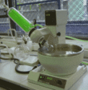

De: La Frikipedia, la enciclopedia extremadamente seria.
De: La Frikipedia, la enciclopedia extremadamente seria. De: La Frikipedia, la enciclopedia extremadamente seria.
|  | Este usuario tiene un [[|Laboratorio Privado]] en donde se dedica a hacer pruebas de máxima toxicidad o lo que es lo mismo nada |
Para usar esta plantilla no copies el código, simplemente escribe {{Frikibox/Laboratorio|Destino de tu laboratorio}}.
Autor(es):